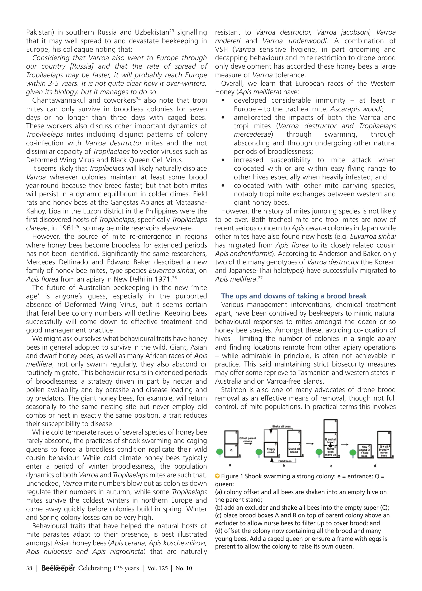

Figure 1 Shook swarming a strong colony: e = entrance; Q =
queen:
(a) colony offset and all bees are shaken into an empty hive on
the parent stand;
(b) add an excluder and shake all bees into the empty super (C);
(c) place brood boxes A and B on top of parent colony above an
excluder to allow nurse bees to filter up to cover brood; and
(d) offset the colony now containing all the brood and many
young bees. Add a caged queen or ensure a frame with eggs is
present to allow the colony to raise its own queen.
Pakistan) in southern Russia and Uzbekistan23 signalling
that it may well spread to and devastate beekeeping in
Europe, his colleague noting that:
Considering that Varroa also went to Europe through
our country [Russia] and that the rate of spread of
Tropilaelaps may be faster, it will probably reach Europe
within 3-5 years. It is not quite clear how it over-winters,
given its biology, but it manages to do so.
Chantawannakul and coworkers24 also note that tropi
mites can only survive in broodless colonies for seven
days or no longer than three days with caged bees.
These workers also discuss other important dynamics of
Tropilaelaps mites including disjunct patterns of colony
co-infection with Varroa destructor mites and the not
dissimilar capacity of Tropilaelaps to vector viruses such as
Deformed Wing Virus and Black Queen Cell Virus.
It seems likely that Tropilaelaps will likely naturally displace
Varroa wherever colonies maintain at least some brood
year-round because they breed faster, but that both mites
will persist in a dynamic equilibrium in colder climes. Field
rats and honey bees at the Gangstas Apiaries at Mataasna-
Kahoy, Lipa in the Luzon district in the Philippines were the
first discovered hosts of Tropilaelaps, specifically Tropilaelaps
clareae, in 196125, so may be mite reservoirs elsewhere.
However, the source of mite re-emergence in regions
where honey bees become broodless for extended periods
has not been identified. Significantly the same researchers,
Mercedes Delfinado and Edward Baker described a new
family of honey bee mites, type species Euvarroa sinhai, on
Apis florea from an apiary in New Delhi in 1971.26
The future of Australian beekeeping in the new ‘mite
age’ is anyone’s guess, especially in the purported
absence of Deformed Wing Virus, but it seems certain
that feral bee colony numbers will decline. Keeping bees
successfully will come down to effective treatment and
good management practice.
We might ask ourselves what behavioural traits have honey
bees in general adopted to survive in the wild. Giant, Asian
and dwarf honey bees, as well as many African races of Apis
mellifera, not only swarm regularly, they also abscond or
routinely migrate. This behaviour results in extended periods
of broodlessness a strategy driven in part by nectar and
pollen availability and by parasite and disease loading and
by predators. The giant honey bees, for example, will return
seasonally to the same nesting site but never employ old
combs or nest in exactly the same position, a trait reduces
their susceptibility to disease.
While cold temperate races of several species of honey bee
rarely abscond, the practices of shook swarming and caging
queens to force a broodless condition replicate their wild
cousin behaviour. While cold climate honey bees typically
enter a period of winter broodlessness, the population
dynamics of both Varroa and Tropilaelaps mites are such that,
unchecked, Varroa mite numbers blow out as colonies down
regulate their numbers in autumn, while some Tropilaelaps
mites survive the coldest winters in northern Europe and
come away quickly before colonies build in spring. Winter
and Spring colony losses can be very high.
Behavioural traits that have helped the natural hosts of
mite parasites adapt to their presence, is best illustrated
amongst Asian honey bees (Apis cerana, Apis koschevnikovi,
Apis nuluensis and Apis nigrocincta) that are naturally
resistant to Varroa destructor, Varroa jacobsoni, Varroa
rindereri and Varroa underwoodi. A combination of
VSH (Varroa sensitive hygiene, in part grooming and
decapping behaviour) and mite restriction to drone brood
only development has accorded these honey bees a large
measure of Varroa tolerance.
Overall, we learn that European races of the Western
Honey (Apis mellifera) have:
•
developed considerable immunity – at least in
Europe – to the tracheal mite, Ascarapis woodi;
•
ameliorated the impacts of both the Varroa and
tropi mites (Varroa destructor and Tropilaelaps
mercedesae)
through
swarming,
through
absconding and through undergoing other natural
periods of broodlessness;
•
increased susceptibility to mite attack when
colocated with or are within easy flying range to
other hives especially when heavily infested; and
•
colocated with with other mite carrying species,
notably tropi mite exchanges between western and
giant honey bees.
However, the history of mites jumping species is not likely
to be over. Both tracheal mite and tropi mites are now of
recent serious concern to Apis cerana colonies in Japan while
other mites have also found new hosts (e.g. Euvarroa sinhai
has migrated from Apis florea to its closely related cousin
Apis andreniformis). According to Anderson and Baker, only
two of the many genotypes of Varroa destructor (the Korean
and Japanese-Thai halotypes) have successfully migrated to
Apis mellifera.27
The ups and downs of taking a brood break
Various management interventions, chemical treatment
apart, have been contrived by beekeepers to mimic natural
behavioural responses to mites amongst the dozen or so
honey bee species. Amongst these, avoiding co-location of
hives – limiting the number of colonies in a single apiary
and finding locations remote from other apiary operations
– while admirable in principle, is often not achievable in
practice. This said maintaining strict biosecurity measures
may offer some reprieve to Tasmanian and western states in
Australia and on Varroa-free islands.
Stainton is also one of many advocates of drone brood
removal as an effective means of removal, though not full
control, of mite populations. In practical terms this involves
38 |
Celebrating 125 years | Vol. 125 | No. 10